VALET teaches a reinforcement learning agent to selectively
consult a VLM expert, querying only at genuine decision points to learn faster, more
stably, and at lower supervision cost than either approach alone.
Abstract
We introduce VALET (VLM-Assisted LEarning
with Targeted queries), a framework that augments a PPO agent with an explicit,
penalized query action to consult an expert (BFS Oracle or VLM) on demand. The agent learns
endogenously when guidance is worth its cost \(c\), rather than querying blindly or
following a hand-crafted schedule.
Experiments on MiniGrid-DoorKey and Sokoban show faster convergence,
reduced variance, and self-regulated oracle usage. The querying behavior transfers
zero-shot to unseen tasks, and the agent naturally stops querying when the oracle is
not reliable enough. Furthermore, the framework enables training a single navigation
model across multiple tasks, allowing the agent to generalize its behavior without
task-specific retraining. VALET demonstrates that RL agents can learn not just
how to act, but when to ask for help.
RL agents are notoriously sample-inefficient, particularly in sparse-reward settings
where rewards are rare and exploration is costly. They must discover task structure
purely through trial and error, with no prior knowledge of the world.
VLMs, by contrast, encode rich semantic and visual knowledge acquired through
large-scale pretraining. Yet querying them at every timestep is prohibitively
expensive, and tying them rigidly to the learning loop removes any incentive for
the agent to become autonomous.
The name VALET reflects the core design
philosophy: like a valet who stands ready to assist but does not interfere unbidden,
the VLM is available on demand and serves the agent only when called upon. Inspired
by dual-process models of cognition [1], we treat the RL policy as a
fast, reactive system, while the VLM acts as a slower, deliberative module. VALET
extends the agent's action space with an explicit Query VLM action, which
returns a suggested action based on the current state. To ensure efficiency, the
agent is explicitly penalized by a cost \(c\) for querying, encouraging it to rely
on external guidance only when truly necessary.
We evaluate VALET by addressing the following research questions:
Does VALET reduce sample complexity compared to a standard PPO baseline?
Does the agent learn to invoke the VLM selectively and efficiently?
How does the performance–cost trade-off evolve as query penalty \(c\) varies?
Does the learned querying behavior transfer zero-shot to unseen tasks?
II. Related Works
Prior work on injecting external knowledge into RL falls into three categories.
Reward shaping. Kwon et al. [2], Du et al.
[3], Klissarov et al. [4], and Rocamonde
et al. [5] use LLMs or VLMs to evaluate the agent's
actions and translate that evaluation into a bonus or penalty added to the reward.
The VLM never decides what to do, it only scores what was done. VALET differs
fundamentally: the VLM suggests an action, and the agent actively chooses
whether to ask for it.
Foundation models as direct policies. RT-1 [6],
RT-2 [7], and OpenVLA [8] replace the RL
policy with a large vision-language-action model that produces an action at
every timestep. This is powerful but prohibitively expensive at scale, and
the agent has no incentive to become autonomous. VALET uses the VLM as an on-demand
oracle rather than a permanent policy, querying it only when the agent decides it is
worth the cost.
Most closely related. Merler et al. [9] augment
a PPO agent with selective VLM supervision triggered by the entropy of the policy,
the idea being that high-entropy states signal uncertainty and warrant guidance. VALET
shares this intuition but goes further on two fronts: first, instead of a hand-crafted
entropy threshold, the query is an explicit action in the MDP, so the agent discovers
the cost–benefit trade-off on its own through the RL objective; second, Merler et al.
use the VLM guidance as a behaviour cloning signal, directly imitating the suggested
action via a supervised loss, whereas VALET treats the oracle response as part of the
environment, letting the agent freely choose whether to follow it or not.
III. Method
A. Reinforcement Learning Agent
Method — VALET framework
How the agent decides between acting and asking for help
Simulate:
Normal path. The agent selects a ∈ A directly. The action is executed in the environment and returns a new observation and reward r, with no penalty.
Oracle path. The agent selects query. The oracle (BFS or VLM) provides a suggested action a*, which is executed directly — the agent does not get to accept or reject it. The agent pays a fixed cost c, learning to query only when the benefit outweighs the penalty.
Framework Overview.
VALET augments a standard Proximal Policy Optimization (PPO) agent
[12] with a dedicated
query action that allows the agent to solicit a suggested action from an
external expert. Formally, given an environment with action space \(\mathcal{A}\),
we extend it to \(\mathcal{A}' = \mathcal{A} \cup \{\texttt{query}\}\). When the
agent selects \(\texttt{query}\), the expert-suggested action
\(a^* \in \mathcal{A}\) is executed directly in the environment
in place of the query, the agent does not get to accept or reject it. The agent
also incurs a fixed query cost \(c \geq 0\) subtracted from the reward signal,
discouraging blind delegation. All other actions are executed normally without any
penalty. This formulation is entirely endogenous: no external scheduler or heuristic
determines when to query. The agent discovers the cost–benefit trade-off on its own
through the RL objective.
Training Setup.
The policy and value networks share a convolutional encoder that processes the RGB observation — a top-down full view or a partial egocentric view depending on the setting. The oracle is available as an additional action; when selected, it executes the BFS-optimal action and incurs a reward penalty of cost c.
Environments.
We evaluate VALET on two environments of increasing complexity:
MiniGrid-DoorKey [10]: a partially
observable grid-world in which the agent must pick up a key, unlock a door, and
reach a green goal tile. The task requires solving two sequential sub-goals under
sparse rewards, making it a standard benchmark for sparse-reward RL. We evaluate
on both the 8×8 and 16×16 variants; the larger grid introduces a reduced field
of view to test the agent under stronger partial observability.
Gym-Sokoban [11]: a combinatorial puzzle
in which the agent must push boxes onto target locations. Unlike MiniGrid, actions
are irreversible and dead-ends are reachable after only a few mistakes, making
planning horizons significantly longer.
Oracles.
We consider three oracle types behind the \(\texttt{query}\) action. First, a
Breadth-First Search (BFS) oracle provides the optimal next action given the full
environment state, serving as a perfect upper bound. Second, a noisy BFS oracle
returns the optimal action with probability \(p\) and a random action otherwise,
allowing us to simulate imperfect guidance at controllable accuracy and at a
fraction of the cost of querying a real VLM. Third, real VLMs are evaluated as
drop-in replacements: we select WeThink-Qwen2.5-VL 7B [13],
a vision-language model fine-tuned for general-purpose reasoning via reinforcement
learning, as our VLM oracle following a comparative benchmark of open-weight models.
B. Vision-Language Model
Model Selection.
We evaluate several open-weight VLMs. Models are
served via vLLM with deterministic decoding, and prompted with the top-down RGB
observation (global view of the state) alongside a brief textual state descriptor. We compare different prompt
phrasings and
report macro-F1 as the primary metric, since the action
distribution is imbalanced and several models exhibit mode collapse.
Temporal Context.
We also investigate whether providing a sliding window of past frames improves
predictions, giving the VLM past images and past actions as additional context.
Full results and model comparisons are presented in Section IV-B.
C. Zero-Shot Transfer
To test whether the querying behavior learned on DoorKey generalizes to unseen
tasks, we deploy trained agents directly on two new MiniGrid environments without
any additional training or fine-tuning.
Transfer Environments.
Both environments are structurally different from DoorKey and require new forms of
reasoning:
Fetch: multiple objects are placed on the grid and the agent
must pick up the correct one based on a language instruction. This task was
originally designed for visual and language understanding; since our oracle and
VLM can parse the instruction, it provides a natural test of cross-task
generalization.
MultiRoom: the grid is divided into several rooms connected by
locked doors. The agent must open each door in sequence to reach the goal in the
final room, requiring longer-horizon planning than DoorKey.
Evaluated Agents.
We test two agents: (i) the VALET agent trained on DoorKey with query cost
\(c = 0.01\), which reached ~40% oracle usage at convergence; and (ii) a standard
PPO agent trained on MiniGrid-DoorKey without any oracle access, serving as the
baseline.
Action Decision Strategy.
For the VALET agent, we compare two action selection strategies at inference time.
The first uses argmax, always selecting the action with the highest policy
probability. The second uses stochastic sampling, drawing actions from the
policy distribution. The stochastic setup is particularly relevant: even a
well-trained agent occasionally assigns a small probability to the query action,
meaning that when the agent is stuck and repeatedly executing an incorrect move, it
can spontaneously call the oracle to reset its trajectory. We track four metrics:
success rate, episodic return, oracle usage, and trajectory efficiency
(ratio of the shortest-path length to the actual number of steps taken).
IV. Experiments
A. BFS Oracle: Upper Bound
We first validate the VALET framework using a perfect BFS oracle to establish an
empirical upper bound. Agents are trained under varying query costs
\(c \in \{0.00,\, 0.01,\, 0.02,\, 0.05\}\) and compared against an unguided PPO
baseline (lower bound). We track episodic return, success rate, and oracle usage.
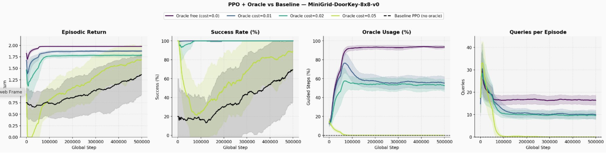
Figure 1. Training curves on MiniGrid-DoorKey-8×8 under
varying oracle costs \(c \in \{0.00, 0.01, 0.02, 0.05\}\). Shaded regions indicate variance
across seeds. Black line: unguided PPO baseline.
With \(c = 0\), the agent queries at nearly every step (~90%) and reaches maximum
return almost immediately. With \(c = 0.01\) and \(c = 0.02\), oracle usage spikes
early (~75%) then decays and stabilizes (~55-60%) as parts of the optimal policy
are internalized, while both costs still achieve 100% success rate. The most
striking result is at \(c = 0.05\): the agent eventually stops querying altogether,
yet the early oracle-guided steps bootstrap learning and allow it to reach optimal
success faster than the unguided baseline. Oracle access also markedly reduces
variance across seeds, confirming that even brief expert supervision can both
accelerate and stabilize PPO on sparse-reward tasks.
We then extend this experiment to a larger and more challenging setting:
MiniGrid-DoorKey-16×16 with partial observability, where the agent only perceives
a limited field of view rather than the full grid. Partial observability makes the
task significantly harder, as the agent must navigate and plan under uncertainty.
As shown in Figure 2, VALET not only scales to this harder setting but actually
benefits more from oracle guidance: the gap between the oracle-assisted agents and
the PPO baseline is larger than on the 8×8 grid, and the agent exhibits the same
self-regulated querying behavior across all cost values. This confirms that VALET
is particularly well-suited to environments where the agent's limited view creates
genuine uncertainty that the oracle can help resolve.
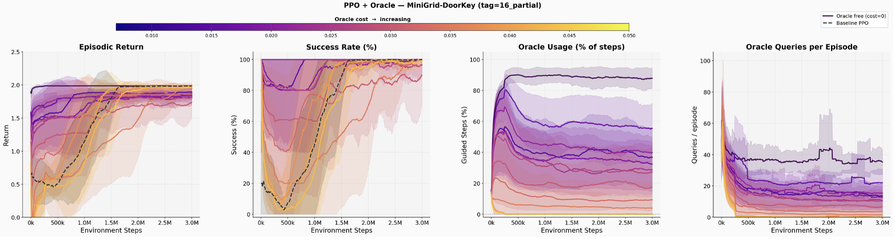
Figure 2. Training curves on MiniGrid-DoorKey-16×16 with partial
observability, under a sweep of oracle costs (blue to orange, increasing cost).
Interpretability of VALET
Closer inspection of the best-performing setup (\(c = 0.010\)) on the 16×16
environment reveals an interpretable querying strategy: the agent has effectively
learned only two behaviors, going forward and calling the oracle, and triggers
the oracle predominantly when no object is visible in its field of view. This
suggests that the agent has internalized a meaningful exploration heuristic:
navigate autonomously when the scene provides no useful signal, and delegate to
the expert when guidance is needed. The video shows this behavior in action.
This is a case of maximal delegation: inspecting the action probability
distribution reveals that the agent assigns nearly all probability mass to just
two actions, going forward and querying the oracle. Even to turn, the agent
calls the oracle rather than deciding autonomously.
As the query cost increases, this behavior evolves: the agent gradually reallocates
probability to other actions, learning task-specific sub-policies such as opening
a door when standing in front of one, or picking up the key when it is in reach,
without needing to consult the oracle. This internalization of sub-goals directly
explains the progressive decrease in oracle usage as cost grows, and its complete
disappearance at the highest cost values.
A key limitation, however, is that replacing the BFS oracle with a VLM of
equivalent quality requires a model capable of near-optimal action prediction,
which remains prohibitively expensive at inference time.
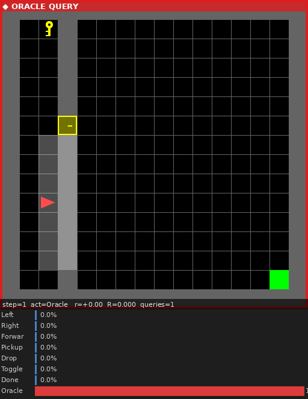
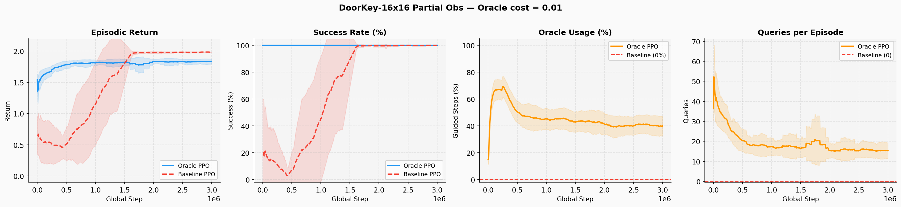
Figure 3. Training curves for \(c = 0.01\) on MiniGrid-DoorKey-16×16.
From left to right: episodic return, success rate, oracle usage, and oracle queries
per episode. The agent reaches 100% success rate and converges significantly faster
than the PPO baseline. Oracle usage spikes early around 70%, then stabilizes at
~40% as the policy matures.
Figure 3 confirms the progression described above. Early in training, the agent
queries the oracle heavily (~70%), relying almost entirely on external guidance to
navigate the task. As training progresses, oracle usage stabilizes at ~40%: the agent
has internalized the most frequent sub-goals and only calls the oracle when genuinely
uncertain. This self-regulated decay in oracle dependence, combined with a 100% success
rate and markedly faster convergence than the PPO baseline, illustrates the core
benefit of VALET: expert supervision is used when it matters most, and progressively
replaced by learned autonomy.
B. VLM Benchmarking
Before integrating a real VLM as the oracle, we benchmark candidate models on a
300-sample MiniGrid evaluation set annotated by the BFS oracle. As shown in
Figure 3, we plot the macro-F1 vs. latency trade-off across
models and prompt variants, top-left being optimal. WeThink-Qwen2.5-VL 7B
emerges as the best model, and the verbose prompt consistently
outperforms the other phrasings across models.
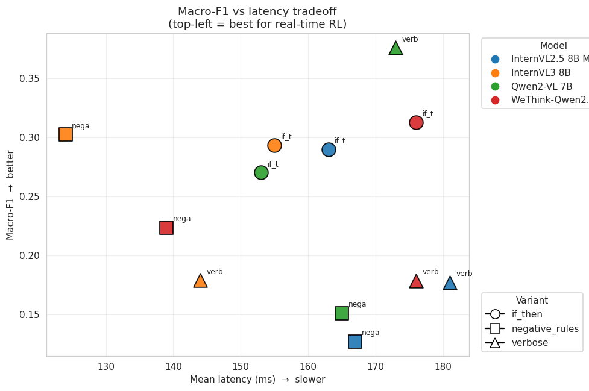
Figure 3. Macro-F1 vs. mean inference latency for the evaluated
VLMs under three prompt variants. Top-left is best. WeThink-Qwen2.5-VL 7B with the
verbose prompt achieves the highest macro-F1 score and is retained
as the VLM oracle in all subsequent experiments.
No model-prompt combination exceeds a macro-F1 of 0.40, and prompt phrasing alone
shifts performance by more than 20 absolute points within a single model. Based on
these results, we select Qwen2-VL with the verbose prompt
as our best configuration. We also investigate whether providing temporal context
(action history as text or stacked past frames) improves predictions. As shown in
Figure 4, neither modality yields a notable improvement, suggesting that the
bottleneck lies in zero-shot spatial reasoning rather than the lack of temporal
context.
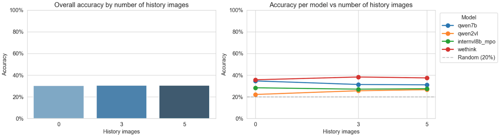
Figure 5. Macro-F1 as a function of the number of past frames
provided to the VLM, for text-based action history and image-based history.
Neither modality shows a notable improvement over the single-frame baseline.
C. VLM as the Oracle
Having selected WeThink-Qwen2.5VL 7B with the best-performing prompt configuration,
we replace the BFS oracle with this VLM directly in the VALET training loop. At each
query, the agent receives the VLM's suggested action instead of the BFS-optimal one.
As shown in Figure 5, the results are largely inconclusive: no configuration clearly
outperforms the PPO baseline, and the VLM's accuracy against the BFS oracle remains
below 35% throughout training.
The most striking failure is at cost \(c = 0\): since querying is free, the agent
queries the VLM more, and because the VLM guidance is poor, it
actively hurts performance, making this the worst-performing configuration. At higher
costs, the agent queries less frequently and performs closer to the baseline, but
never significantly above it. These results confirm that at ~35% accuracy, the VLM
does not provide reliable enough guidance to benefit the agent. This motivates the
noisy oracle ablation in the following section, where we systematically study what
accuracy threshold is required for the oracle to add value.
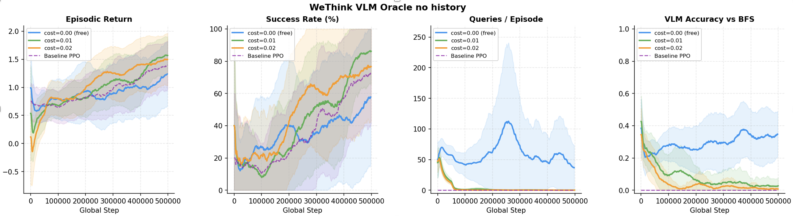
Figure 6. Training curves on MiniGrid-DoorKey-8×8-v0 with
WeThink-Qwen2.5VL 7B as the oracle, under varying query costs. From left to
right: episodic return, success rate, queries per episode, and VLM accuracy
vs. BFS. The cost=0 condition (free queries) performs worst due to the agent
over-relying on a low-accuracy VLM (~35%).
D. Noisy Oracle
The VLM integration results raise a natural question: does the VALET framework
itself work, or is the lack of improvement simply due to the VLM being too weak?
To answer this, we decouple the framework from the VLM quality by simulating oracles
of controlled accuracy. A noisy oracle returns the BFS-optimal action with
probability \(p\) and a uniformly random action with probability \(1-p\), simulating
a VLM with \(p\%\) accuracy. By sweeping \(p\) across a range of
values, we can identify the accuracy threshold above which oracle guidance actually
benefits the agent.
As shown in Figure 6, the results confirm that the framework is sound. Above the
accuracy threshold, the agent queries more frequently and achieves significantly
better performance, and a sufficiently accurate oracle unlocks near-perfect success
rates. Below the threshold, the agent naturally stops calling the oracle altogether,
self-regulating its querying behavior through the cost signal alone.
This last finding is particularly significant. It means that providing an agent
with access to a low-quality VLM carries no risk: rather than being misled, the
agent simply learns to ignore it. One can safely deploy VALET with any available
VLM, and the agent will only benefit from it if the guidance is reliable enough.
There is no downside, only a potential upside.
This also opens an interesting avenue for future work: a trained VALET agent could
serve as an automatic benchmark for VLM quality. By simply measuring its oracle
usage rate when paired with a given VLM, one can infer whether that VLM is
accurate enough to be useful, without any labeled data or manual evaluation.
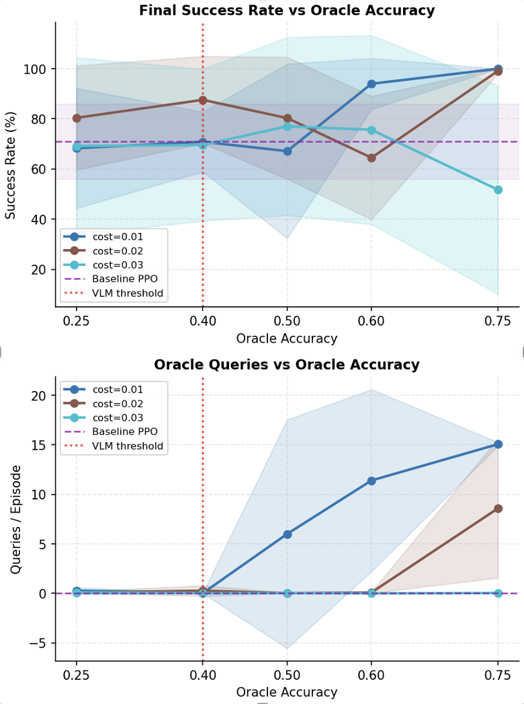
Figure 7. Final success rate (top) and oracle queries per
episode (bottom) vs. oracle accuracy \(p\). The red dotted line marks the
current VLM accuracy (~35%). Below the threshold the agent stops querying;
above it, performance increases sharply.
E. Zero-Shot Transfer
We deploy the VALET agent trained on DoorKey-16×16 directly on
two structurally different tasks, without any retraining. We compare it against
a standard PPO baseline and evaluate both argmax and stochastic action selection.
The stochastic variant consistently outperforms argmax: by sampling from the policy
distribution rather than always picking the top action, the agent retains a small
probability of selecting the query action at every step. This acts as a natural
escape mechanism, when the agent gets stuck repeating the same incorrect move, it
can spontaneously call the oracle to reset its trajectory, rather than looping
indefinitely.
Fetch
In the Fetch task, multiple objects are placed on the grid and the agent must
pick up the correct one based on a language instruction. The PPO baseline
achieves only 6% success rate, struggling to interpret the instruction without
prior training. The VALET agent with stochastic sampling reaches 100% success,
with a trajectory efficiency of 0.87, meaning it follows a near-optimal path
while calling the oracle roughly 60% of the time. The argmax variant also
succeeds (69%) but with less flexibility. This confirms that the query behavior
learned on DoorKey transfers directly to instruction-following tasks.
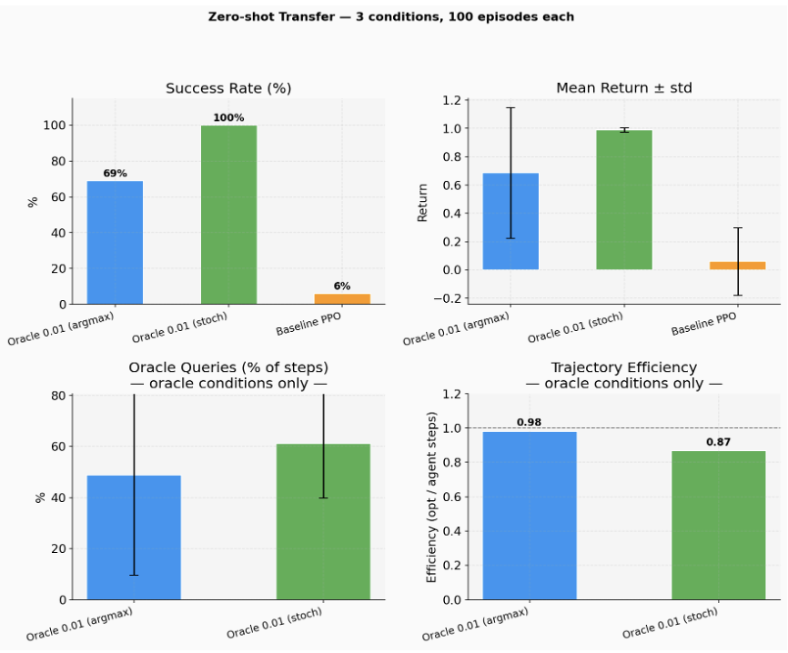
Figure 8. Zero-shot transfer on Fetch (100 episodes).
Success rate, mean return, oracle queries, and trajectory efficiency
for Oracle 0.01 argmax, Oracle 0.01 stochastic, and PPO baseline.
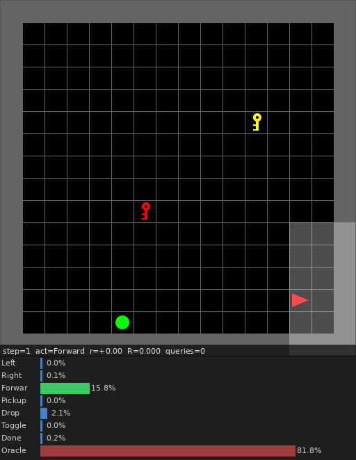
Simulation of the VALET agent (stochastic) on the Fetch task.
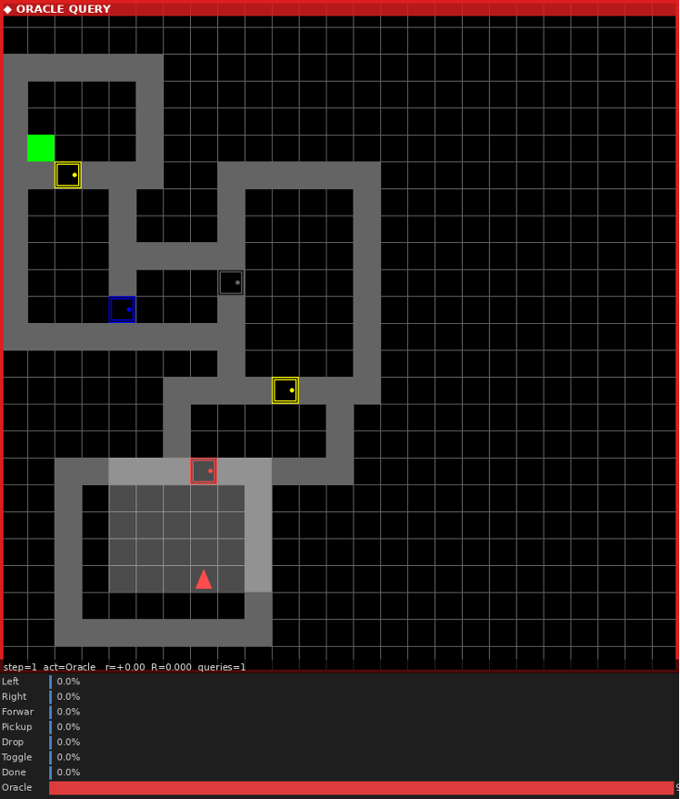
Simulation of the VALET agent (stochastic) on the MultiRoom task.
MultiRoom
In the MultiRoom task, the agent must open a sequence of doors to navigate
through multiple connected rooms. This requires longer-horizon planning than
DoorKey. The PPO baseline completely fails with 0% success, unable to chain
the required sub-goals. Both VALET variants succeed with near-perfect rates
(97% argmax, 100% stochastic) and trajectory efficiencies of 1.00 and 0.98
respectively, meaning the oracle guidance yields essentially optimal paths.
Oracle usage is high (~75-80%), reflecting the genuine complexity of the task,
yet the agent still succeeds efficiently. This demonstrates that VALET
generalizes not just to new objects but to entirely new task structures.
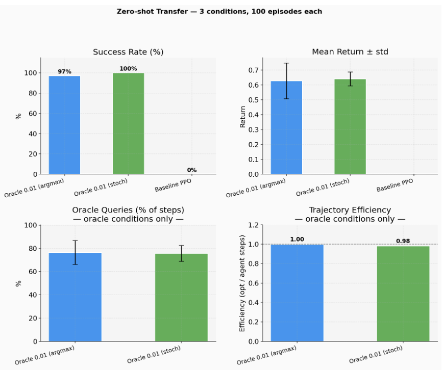
Figure 9. Zero-shot transfer on MultiRoom (100 episodes).
Success rate, mean return, oracle queries, and trajectory efficiency
for Oracle 0.01 argmax, Oracle 0.01 stochastic, and PPO baseline.
Takeaways from Zero-Shot Transfer
These results invite a reframing of what VALET actually learns. The PPO baseline
fails at transfer precisely because it memorizes a task: its policy encodes the
specific sub-goal structure of DoorKey and cannot generalize when that structure
changes. VALET, by contrast, learns a fundamentally different behavior: how to
navigate toward a desired object, wherever it is, by delegating the question of
which object to pursue to the oracle. The task identity is never hardcoded
into the policy, it is resolved at runtime through queries.
This perspective points toward an ideal regime for VALET: an agent that relies on
the oracle to identify and locate the target object, and autonomously navigates
toward it once the object enters its field of view, without further queries. When
multiple objects are visible simultaneously, two behaviors may emerge: the agent
either probes each candidate in turn until it finds the correct one, or, ideally,
queries the oracle precisely because it cannot resolve the ambiguity on its own.
The latter would yield a near-perfect, generalizable navigate-to-goal agent, capable
of operating across any task where a target object must be reached.
The MultiRoom results also reveal a more subtle limitation. As visible in the GIFs,
the agent has learned to detect objects specific to DoorKey, keys, doors of familiar
colors, goal tiles, but does not reliably recognize the structural elements of
MultiRoom as salient objects. Certain doors, likely due to their color or appearance,
are not treated as actionable targets: rather than navigating toward them autonomously,
the agent keeps querying the oracle for guidance. This directly explains the high
oracle usage observed in MultiRoom (~75-80%).
More broadly, this points to Fetch as the natural training environment for the ideal
VALET regime described above. Fetch is precisely the task that matches the target
behavior: given multiple objects simultaneously visible in the grid, navigate to the
correct one as specified by a language instruction. Training on Fetch would not only
expose the agent to a richer vocabulary of target objects, resolving the detection
failures observed in MultiRoom, but would directly instantiate the navigate-to-goal
behavior at the core of VALET's design. Due to time constraints, this training
scenario was not explored in this work, and we leave it as the most promising
direction for future investigation.
F. Extension to Sokoban
To verify that VALET generalizes beyond MiniGrid, we train and evaluate it on
Gym-Sokoban, a significantly harder environment with irreversible actions and
longer planning horizons. As shown below, the same framework applies without
modification: the agent learns to self-regulate its oracle usage as a function of
query cost, and the noisy oracle ablation confirms the same accuracy threshold
behavior as on MiniGrid. VALET works.
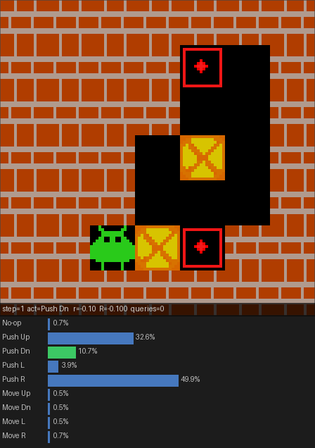
Baseline PPO agent (no oracle).
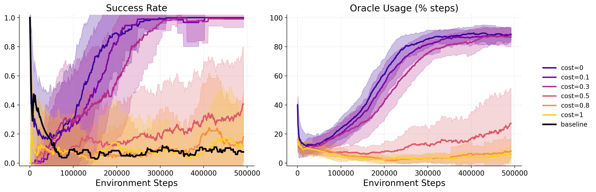
Figure 10. Training curves on Sokoban under varying oracle
costs. Oracle-assisted agents consistently outperform the PPO baseline,
with oracle usage self-regulating as cost increases.
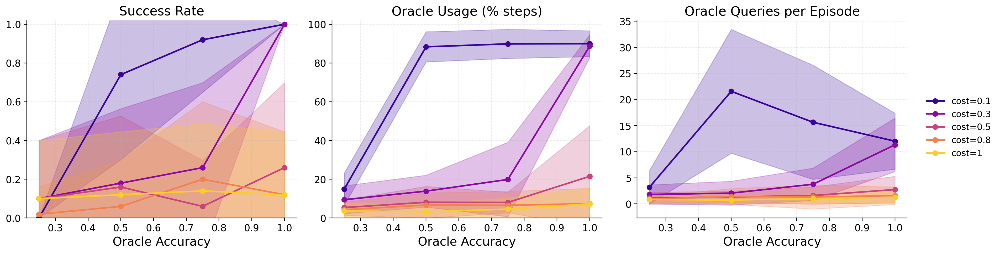
Figure 11. Sokoban results under varying oracle accuracy.
The agent stops querying below the accuracy threshold and benefits
increasingly from more reliable guidance, confirming the same behavior
observed on MiniGrid.
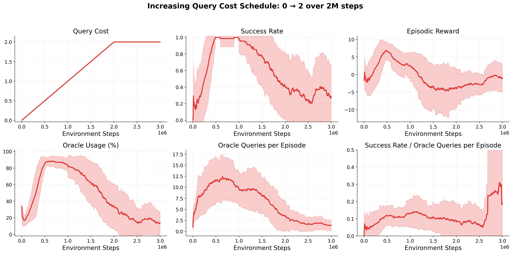
Figure 11. Sokoban training curves under a linearly increasing
query cost schedule. The cost starts at zero and rises gradually over training,
allowing the agent to rely on oracle guidance early on and progressively
internalize the policy as the cost disincentivizes querying.
🧭 Interactive Demo — Be the Oracle
Try VALET yourself. The trained agent navigates
MiniGrid-DoorKey-16×16 through a partial 7×7 view.
It can spend a small cost $c=0.01$ to query an oracle when uncertain.
Here, you are the oracle: whenever the agent decides to ask for help,
the simulation pauses and you choose the action it takes — exactly replacing the
BFS oracle from training. Try giving it good advice, or bad advice, and watch what happens.
If the demo takes a moment to load, the server may be waking up — wait ~30s and refresh.
You can also open it directly on
HuggingFace Spaces.
V. Conclusion and Limitations
VALET agents learned to query the oracle selectively and purposefully, concentrating
calls at genuine decision points rather than blindly delegating at every step. Across
all experiments, the agent self-regulates its oracle usage as a function of query
cost and oracle quality: it queries heavily when guidance is cheap and reliable,
reduces usage as the policy matures, and stops querying entirely when the oracle
is not worth its cost. The zero-shot transfer results further show that this
querying behavior is not task-specific but generalizes to structurally different
environments never seen during training. VALET therefore demonstrates that RL
agents can learn not just how to act, but when to ask for help.
Beyond these empirical findings, the transfer experiments reveal a deeper insight
into what VALET actually learns. Unlike a standard PPO agent, which memorizes
the sub-goal structure of a specific task and fails to generalize, VALET learns a
fundamentally more flexible behavior: how to navigate toward a desired object by
delegating the question of which object to pursue to the oracle. The task
identity is never hardcoded into the policy, it is resolved at runtime through
queries. This makes VALET a natural foundation for a universal navigate-to-goal
agent: one that relies on the oracle when no target is visible, navigates
autonomously once a target enters its field of view, and queries again when faced
with ambiguity among multiple visible objects. The Fetch task, where the agent must
identify and reach the correct object among several simultaneously visible ones,
directly instantiates this ideal regime, and training on it would bring VALET
closest to this vision. We believe this is the most promising direction for future
work, and that VALET provides a principled framework to pursue it.
Limitations
Compute constraints.
All VLM evaluations in this project were restricted to open-weight models in the
2-8B parameter range, due to compute budget limitations. Stronger frontier models
may yield significantly higher action accuracy, potentially crossing the threshold
above which VLM guidance genuinely benefits the agent. Whether such models would
make VALET fully end-to-end remains an open question.
Full observability assumption.
All experiments were conducted in environments where the BFS oracle observes the
full environment state, which is a strong assumption. In more realistic settings,
both the agent and the expert would only perceive a partial view of the world,
making reliable guidance harder to provide. Extending VALET to partially observable
oracles is an important direction for future work.
Future Work
Are open-weight VLMs the bottleneck?
The noisy oracle results show that performance improves sharply once oracle accuracy
exceeds a threshold. Would stronger frontier models, evaluated from the agent's own
point of view rather than with full state access, unlock reliable enough guidance
to make VALET fully end-to-end with a real VLM?
VALET as a VLM benchmark.
As discussed in the noisy oracle section, the oracle usage rate of a trained VALET
agent could serve as an automatic proxy for VLM quality, without any labeled data.
This could provide a lightweight, deployment-time method for evaluating and
comparing VLMs in decision-making settings.
Training on Fetch toward a universal navigate-to-goal agent.
The Fetch task directly instantiates the ideal VALET behavior: identify the correct
target among multiple visible objects and navigate to it. Training on Fetch would
expose the agent to a richer object vocabulary, resolving the detection failures
observed in MultiRoom, and bring VALET closer to a generalizable navigate-to-goal
agent. Due to time constraints, this was not explored in this work.
Transfer to continuous environments.
All experiments use discrete action spaces. Can VALET agents learn when to ask for
help in high-dimensional, continuous action spaces, such as robotic manipulation
or locomotion tasks? Extending the framework to continuous control would
significantly broaden its applicability.
References
[1] D. Kahneman, Thinking, Fast and Slow. Allen Lane, 2011.
[2] M. Kwon, S. M. Xie, K. Bullard, and D. Sadigh, "Reward design with language models,"
ICLR, 2023.
[3] Y. Du et al., "Guiding pretraining in reinforcement learning with large language models,"
ICML, 2023.
[4] M. Klissarov et al., "Motif: Intrinsic motivation from artificial intelligence feedback,"
NeurIPS Workshop on Foundation Models for Decision Making, 2023.
[5] J. Rocamonde et al., "Vision-language models are zero-shot reward models for reinforcement learning,"
ICLR, 2024.
[6] A. Brohan et al., "RT-1: Robotics transformer for real-world control at scale,"
arXiv:2212.06817, 2022.
[7] A. Brohan et al., "RT-2: Vision-language-action models transfer web knowledge to robotic control,"
arXiv:2307.15818, 2023.
[8] M. J. Kim et al., "OpenVLA: An open-source vision-language-action model,"
arXiv:2406.09246, 2024.
[9] M. Merler, G. Bonetta, and B. Magnini, "Guiding reinforcement learning with selective
vision-language model supervision," ECAI Workshop CAIPI'25, 2025.
[10] M. Chevalier-Boisvert, B. Dai, M. Towers, R. de Lazcano, L. Willems, S. Lahlou,
S. Pal, P. S. Castro, and J. Terry, "Minigrid & miniworld: Modular & customizable
reinforcement learning environments for goal-oriented tasks,"
arXiv:2306.13831, 2023.
[12] J. Schulman, F. Wolski, P. Dhariwal, A. Radford, and O. Klimov,
"Proximal policy optimization algorithms,"
arXiv:1707.06347, 2017.
[13] J. Yang, F. Ma, Z. Wang, D. Yin, K. Rong, F. Rao, and R. Zhang,
"WeThink: Toward general-purpose vision-language reasoning via reinforcement learning,"
arXiv:2506.07905, 2025.
[arXiv]